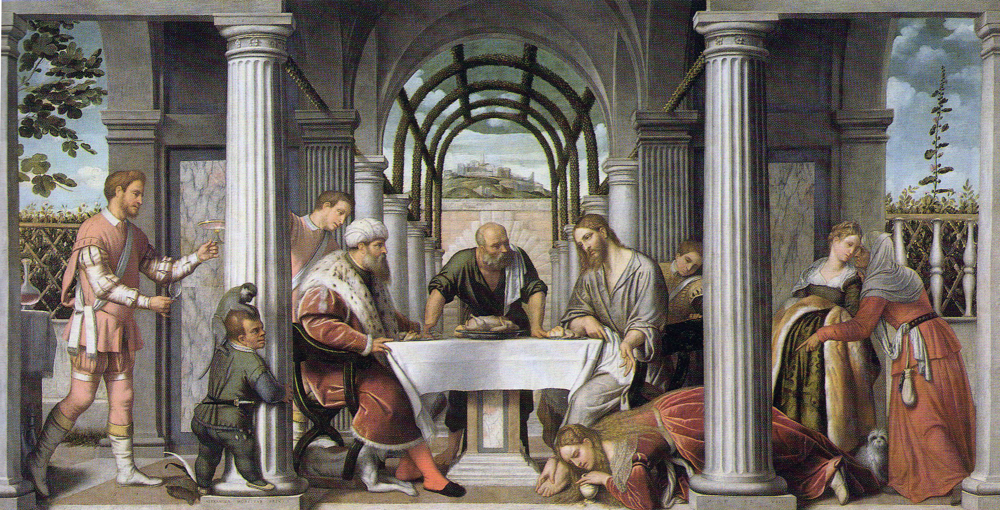
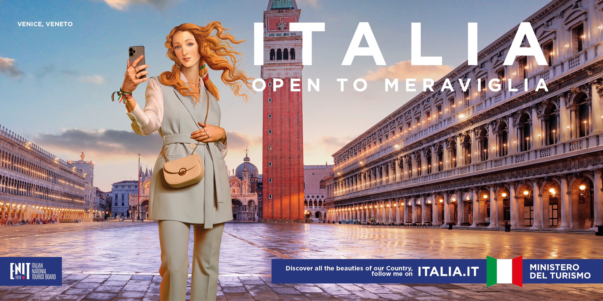
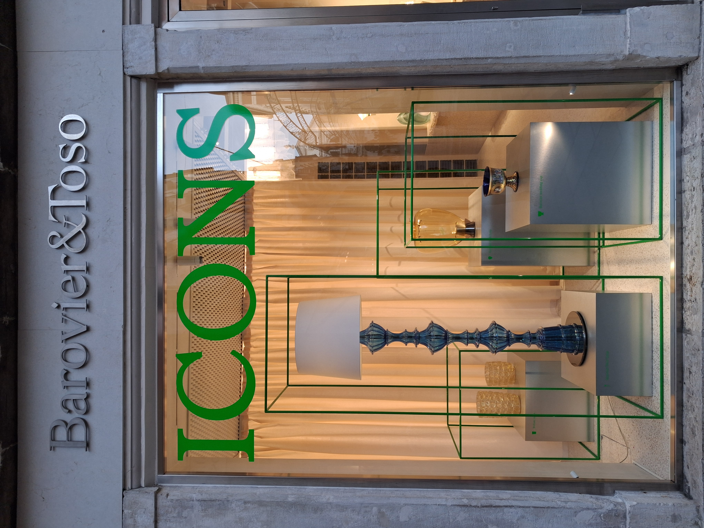
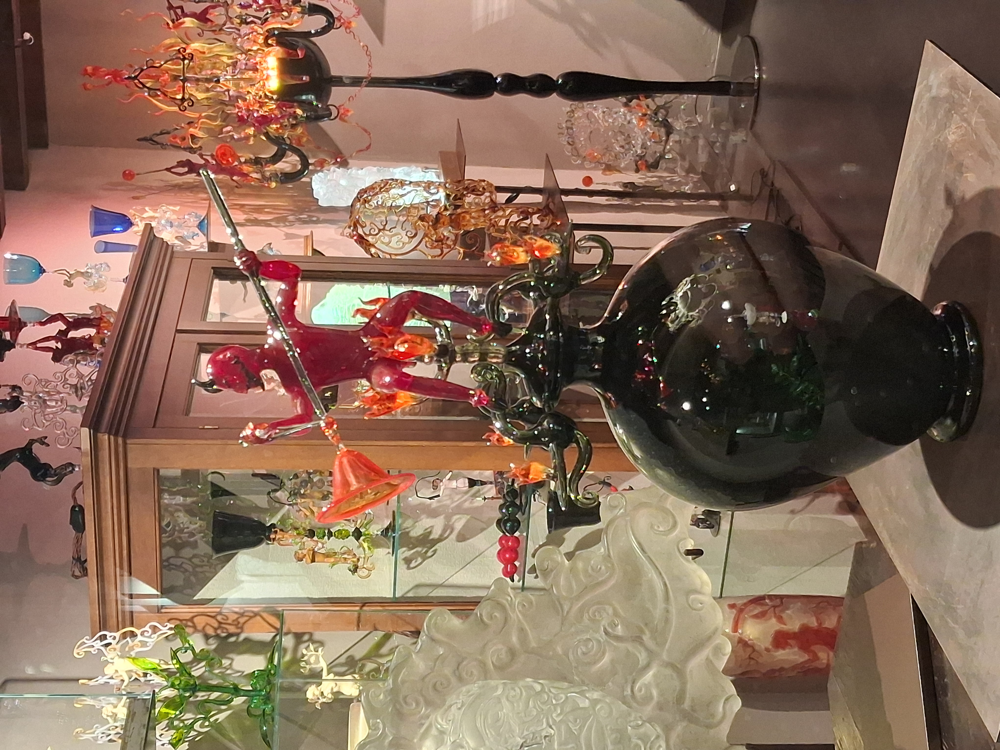
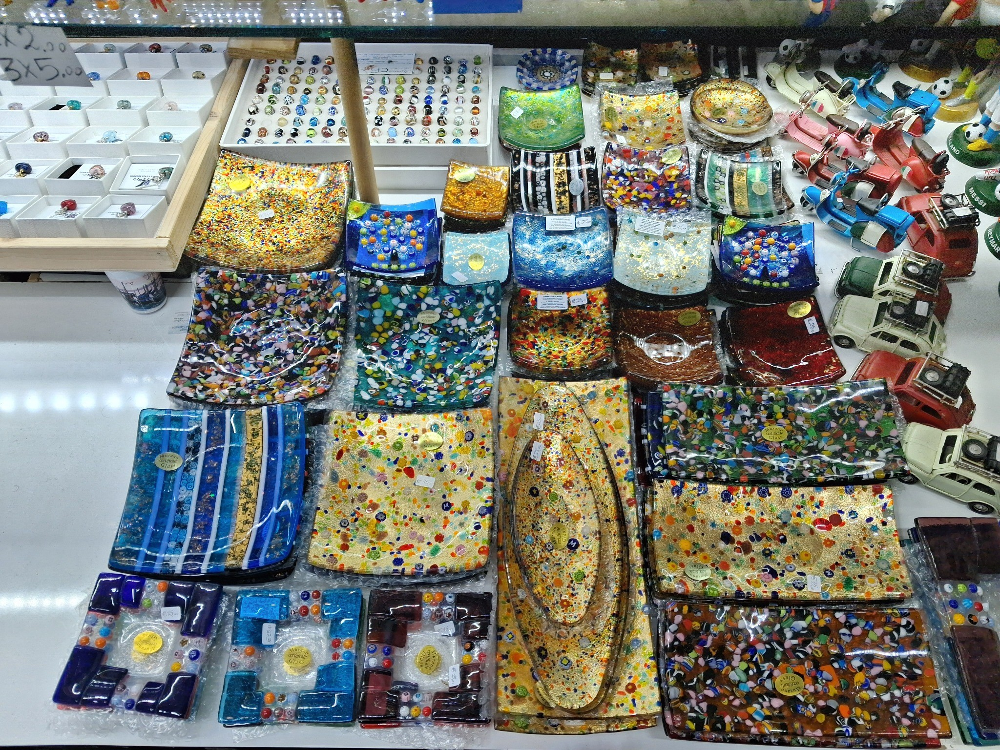

Abstract
At Marco Polo Airport, Venice is advertised through Murano glass before the lagoon comes into view. From there, this article follows the material itself across a selective, visitor-oriented itinerary: underfoot on Calatrava’s Ponte della Costituzione at Piazzale Roma; in the hand as the glass-covered screen that returns the body to Piazza San Marco as an image; set into the façade as a shop window staging a canon of Murano production; compressed into the furnace demonstration on Murano that shows mastery while withholding its conditions; and graspable at the souvenir counter, carried into another everyday life. The itinerary therefore concerns glass in contemporary Venice more broadly, not Murano glass alone. Methodologically, the article combines situated observation with close visual and material analysis, and draws on art history, material culture, visual culture, and tourism studies, to analyse glass across discontinuous embodiments rather than a single commodity chain. It argues that bringing these different manifestations of glass into relation within the same everyday itinerary reveals cultural value as something enacted through situated encounters, as the material moves between objecthood and mediation. Following these shifts rethinks glass in Venice from the standpoint of ordinary encounter and brings into view relations and processes of valuation that become less visible when glass is approached primarily as a discrete object of art.
Keywords
Airport: Anticipation and Orientation
At Marco Polo Airport, Venice begins before the lagoon. Before the first view of water, before the vaporetto, before the slow disorientation of arrival, Murano glass has already appeared. Its name surfaces in advertisements, on polished images of coloured objects set behind glass in illuminated display frames, in promises of craftsmanship, luxury, and memory. The city is encountered first not through water or light, but through a commercial image of glass. Airports prepare destinations before they are reached; they also pre-select what visitors are expected to desire. Here, the advertisement does more than identify Murano glass with Venice: it anticipates a particular relation to the city, addressing the arriving visitor as a future viewer, buyer, and carrier of its material culture.
This itinerary takes the airport encounter as its point of departure. Rather than offering a comprehensive history of Venetian or Murano glass, it follows glass more broadly through a deliberately selective sequence of encounters in the contemporary city. Together they form a visitor-oriented sequence beginning at Marco Polo Airport, continuing through the transport interchange around Piazzale Roma, then through Piazza San Marco and the surrounding commercial streets, across the lagoon to Murano, and finally into a souvenir shop, where glass passes into domestic space and use. This contemporary route also echoes older practices of guiding visitors through Venice by way of notable sites, ceremonial spaces, commercial displays, and places of production. Sites were chosen not as representative instances of a category but for the specific relation each establishes between the visitor’s body and glass. Other choices within the same stages would have produced different encounters, and therefore different emphases. The claim is not that these forms of glass have gone unstudied, but that this particular sequence brings them into relation as successive encounters within the same everyday experience of Venice.
To do so, the method combines walking, looking, photography, and written description with close visual and material analysis, as well as scholarship in art history, material culture, visual media, and tourism. It adapts “follow-the-thing” approaches, tracing not a single object or commodity through production, circulation, and consumption, but one material across discontinuous embodiments and functions (Appadurai, 1986; Cook, 2004; Evans, 2018). Drawing on Tim Ingold’s (2004) account of walking as a form of embodied, “circumambulatory” knowing rather than a passage between fixed points of observation, the itinerary treats movement through the city, and the writing that follows it, as forms of knowledge production in their own right. It therefore functions not only as a structural device but as a method of writing with the material, in which describing one encounter supplies the context for the next and lets glass’s changing role and value become legible across the route.
Glass is especially productive for this purpose because it occupies two positions at once in Venice: it is one of the city’s most historically charged products, but also an ordinary material through which the contemporary city is encountered. Along the route, it can therefore appear both as something to look at and as a surface through which bodies, images, and spaces are organised. Its historical associations with transparency, optical mediation, and practices of seeing and knowing provide one context for these shifts (Ilardi, 2007; Dillon, 2018; Jütte, 2023). Another, particularly consequential in Venice, is the history through which Venetian glass itself has been made legible and valued. The material has generated an extensive and heterogeneous body of scholarship encompassing archival reconstruction, technical and material analysis, workshop history, terminology, provenance, and object- and style-based study. No brief account can represent this literature in its entirety; the concern here is therefore not to characterise Venetian-glass scholarship as a whole, but to identify one recurrent tendency relevant to the present article. An influential archival and connoisseurial strand of art-historical scholarship on Venetian glass, centred especially on Venice and Murano, has made glass historically legible through named inventions, master makers, family lineages, attributed objects, questions of authenticity, and the idea of a distinctive Murano style. These frameworks are not confined to academic research: they also circulate through collecting, commerce, and display. The history of Murano’s legendary crystal glass (cristallo) exemplifies both the productivity and the limitations of this tendency. Although its development was collective and distributed across generations of makers, it continues to be condensed around Angelo Barovier (c. 1400–1460) and the history of a prominent glassmaking dynasty (Zecchin, 1987, 1989; Barovier Mentasti, 1982, 2006; Zecchin, 2020). Critical studies have complicated this attribution by identifying earlier evidence, stressing the cumulative character of the material’s development, and demonstrating the instability of its historical terminology, while also showing how Murano’s association with artisanal greatness was historically produced and naturalised through discourse, promotion, and historiography (Jacoby, 1993; Beretta, 2017; Krüger, 2020; Hyatt, 2021).
The limitation at issue here therefore concerns neither Venetian-glass scholarship as a whole nor the close study of objects, techniques, or attribution, but the point at which such categories become primary explanatory frames. They can stabilise glass as a bounded artefact, an attributed product, or evidence of technical, stylistic, and familial lineage. This can leave less visible the collective and embodied labour through which glass is made, the practices through which it is handled and displayed, and the broader relational and processual dimensions of material life. Material-oriented and object-centred (art) history has developed processual and relational approaches to materials and objects, connecting their formation and use to historically situated practices of knowledge and value (Cordez, 2018; Bushart and Haug, 2020; Fricke and Lehmann, 2024; Meister, 2024). These approaches informed my doctoral research on the material practices and cultures of value surrounding Murano glass, focused primarily on early modern production and reception (Pawlow, 2025). The present article carries those concerns into an interdisciplinary analysis of contemporary urban perception, including forms of visual and material mediation that usually fall outside the remit of art-historical scholarship on glass. In doing so, the itinerary makes it possible to observe cultural value in formation through ordinary encounter.
Ponte della Costituzione: Glass Underfoot
Venice is not entered all at once. It is approached by water, rail, road, tram, bus, or on foot; each route stages a different passage between mainland and lagoon city. Some arrivals unfold slowly across the water, through the windows of a vaporetto or water taxi. Others take place across the Ponte della Libertà, the road bridge added in 1933 beside the railway connection of 1846. Together, these links unsettle the older imagination of Venice as an isolated island. Whether glimpsed from a boat, train, or bus, or negotiated on foot, arrival is structured by surfaces, frames, and forms of passage.
Surface here is not only something seen, but something crossed, trusted, and tested: a question of what supports movement, what resists it, and what places the body at risk (Gibson, 2015, pp. 17–21). The “Most Serene” is a city of water, glass, brick, plaster, and stone, but its everyday experience depends especially on surfaces shaped by touch, weather, and maintenance. Stone, in Venice, is not simply stable ground. It is darkened by water and polished to shine by feet. Glass, by contrast, promises transparency, brilliance, and lightness, but becomes too slick when asked to serve as a walking surface. This uncertainty takes material form at the edge of the historic city, on the Ponte della Costituzione. Designed by Santiago Calatrava and inaugurated in 2008, the bridge links Piazzale Roma with the railway station area. For many visitors, it is one of the first pedestrian passages into Venice; for residents and commuters, it is part of daily mobility. It may also be one of the first direct bodily encounters with glass. Here, glass is not something seen through, displayed behind, or purchased as a souvenir. It is underfoot — a surface of support above water.
Its glass steps make crossing visually striking but physically awkward, especially in wet weather or for pedestrians carrying luggage, pushing prams, holding shopping bags, or moving with limited mobility. The qualities admired in glass as a visual surface become problematic when it is asked to support movement. Such qualities have long been tied to bodily caution. When Pietro Casola, a Catholic canon from Milan, visited Murano in 1494, he described a chalice of cristallo so noble and finely worked that he did not want to touch it, fearing it might break in his hand (Casola, 1855, p. 13). Fragility here was not only an objective property of the material, but something perceived in advance: seen, imagined, and felt as a risk before the object was ever handled (Pawlow, 2025, pp. 106–115).
This relation between glass and body depended on careful adjustment. The fragile body of the glass vessel required another body to respond to it. The hand had to hold carefully, the gesture had to remain controlled, and the vessel had to be carried by foot, stem, and base rather than seized as a solid thing (see the cupbearer on the left, Fig. 1).

Its own body — foot, belly, shoulder, neck, and lip — was already described through terms borrowed from the human body (Mersmann, 2015, p. 92). In use, that body had to be managed without breakage. Such handling was not incidental but performative: glass vessels were held, offered, filled, and displayed through gestures associated with dexterity, caution, and social refinement (Rihouet, 2013). What mattered was not simply touch, but the careful balance of weight between glass and body. On the Ponte della Costituzione, this relation is reversed. It is no longer the vessel that is fragile in the human hand. The pedestrian body becomes fragile on glass.
That fragility is not metaphorical. Designed as a glass passage over water, the bridge is repeatedly undone by water itself. Rain, humidity, and wet soles turn transparency into slipperiness. Crossing it means not only looking at water, but avoiding it. The spring 2026 installation of experimental anti-slip steps makes explicit what pedestrians already know bodily, as glass here becomes a question of traction rather than transparency. The current experiment does not remove glass altogether. Instead, it asks whether the material can be retained in another form, no longer as a transparent plate underfoot but as part of a more resistant walking surface (Pendolini, 2026). This does not make stone and glass simple opposites. Both are hard materials valued for their capacity to be polished and to retain a luminous surface (Pawlow, 2025, pp. 115–123). Yet they register wear differently. Venetian paving acquires its smoothness and sheen as generations of feet gradually transform its surface. Glass also bears traces of contact, but in another way. Scratches, abrasion, and weathering diminish the very transparency and brilliance that make it desirable, turning a reflective surface cloudy and opaque. Shine, here, is not simply visual pleasure but a surface effect that attracts, disorients, and demands maintenance (Diepeveen and Van Laar, 2021, pp. 1–26). Entry into Venice is therefore a matter of design, testing, repair, governance, and bodily endurance as much as of picturesque arrival or symbolic passage.
Only after this bodily crossing does the more familiar visual Venice return. Water is seen through windows; façades dissolve into canals. As a phone is raised to capture it, glass moves from underfoot into the hand.
Piazza San Marco: Venice on Screen
In the hand, glass no longer supports the visitor’s weight, but it continues to organise bodily conduct. In a city where nearly every bridge invites a photograph, the movement from crossing to posing can seem almost automatic. It becomes especially concentrated in Piazza San Marco, perhaps the city’s most photographed stage, where Venice appears not only as urban space but as a ready-made image that is recognisable and endlessly repeatable.
The tourism campaign Italia. Open to Meraviglia (“open to wonder”) makes this choreography explicit. Launched by ENIT, the Italian national tourism board, in 2023, the campaign transformed Sandro Botticelli’s Venus into the virtual influencer venereitalia23. In one image, Venus stands in Piazza San Marco holding a smartphone and turning the square into the backdrop for a selfie (Fig. 2). Behind her, the Basilica di San Marco and its campanile anchor the view, while the Procuratie Vecchie and Procuratie Nuove extend along either side of the square, forming an instantly recognisable architectural frame. Rather than treating this image as evidence of tourist practice generally, I read it as a promotional script that exaggerates how visitors are invited to use the site.

Venus’s extended arm invokes the bodily configuration of the selfie, with the phone held at a distance from her body. Her gaze, however, appears directed towards the campaign viewer rather than the screen, placing her between image-maker and promotional figure already posed for an external audience. Without depicting the screen’s operation, the advertisement relies on the familiar sequence of actions constituting a photographic interface practice: the front-facing camera relays the body to the glass-covered screen as a live preview for positioning and framing (Wirth, 2018, pp. 220–224). After capture, the photograph can be edited and prepared for circulation. Where the smoothness of glass compromised traction on the bridge, it now facilitates the taps and swipes through which the image is handled. Yet this tactile fluency does not amount to unmediated control, since the programmed interface conditions both the user’s gestures and the image’s appearance (Beugnet, 2020, pp. 1–2). Glass has thus shifted from a surface that bears the body to one borne by it: instead of supporting passage through the city, it returns the body as an image and coordinates its composition with Venice.
The smartphone therefore modifies rather than merely extends the tourist gaze. Destinations may be selected and reproduced through recognisable signs (Urry, 1990, pp. 3–4), but the selfie inserts the visitor into that repertoire, coupling the visibility of place with the performance of self. This conjunction of self-presentation and culturally charged setting has been understood, in studies of museum selfies, as a form of identity work (Kozinets, Gretzel and Dinhopl, 2017). The campaign image, however, exposes a limit of this model. Venus is not an individual using Venice to negotiate an identity, but a prefabricated promotional persona performing a standardised selfie gesture. Identity work is thereby converted into branding work, as self-presentation becomes a means of promoting the destination. Her apparent agency as an image-maker consequently coexists with her objectification as a campaign figure, a tension identified across the campaign’s broader visual corpus and encapsulated in the term “doll-influencer” (Francesconi, 2025, pp. 184–185).
Piazza San Marco is staged to match this figure. Its open space, long arcades, repeated arches, and axial views provide a recognisable setting, while pools of water across the stone paving reflect the illuminated Procuratie and evening sky, rendering the square luminous and smooth. This visual polish depends on selective removal. There are no crowds, queues, birds, vendors, or cleaners, and the labour that keeps the square photographable is omitted with them. Water is aestheticised through the same selection. Usually, it raises questions of traction, as on the Ponte della Costituzione; here, it supplies reflected light, while its effects on movement and demands for maintenance disappear. A single campaign image cannot establish how tourists generally perceive or use the square, but it condenses a specific promotional ideal in which the tactile fluency of the glass interface is matched by a heritage setting staged as frictionless and available for repeatable self-display. Here, glass no longer carries value as an object in its own right, but helps produce it through mediation.
From Window to Workshop: Showing Mastery
From the open expanse of Piazza San Marco, the itinerary turns into the narrower commercial streets around it, where shop windows repeatedly interrupt walking. Glass shifts again, moving from a screen held in the hand to a pane set into the façade. Where the touchscreen mediates the visitor’s framing and circulation of Venice as an image, the shop window turns that mediating function towards objects, arresting movement, framing them, and asking the passer-by to stop, look through, and desire what lies beyond.

One such window belongs to Barovier & Toso. Its temporary ICONS display makes the logic of the shop window unusually explicit (Fig. 3). The word across the glass instructs the passer-by how to look before any individual object is examined. What appears behind the pane is not presented simply as merchandise. Lamps, vessels, and a cup stand on plinths, enclosed by green metal frames and detached from use. They appear less like objects for sale than like exhibits already selected for admiration. The shop window borrows from the museum, and the commercial display begins to speak with curatorial authority. By separating street from interior, the window also changes the status of what it shows. Isolated, lit, and protected behind glass, objects acquire a different visibility and, with it, a different value. What is shown becomes exceptional because it is shown (Prokić, 2022). Here, this elevation is made literal. The objects are raised, framed, and named. The brand does not ask the passer-by merely to buy glass, but to recognise a canon.
At the front right stands the so-called Barovier Cup, a Renaissance design whose significance exceeds that of any individual vessel. Its connection to the aforementioned Angelo Barovier, the much-mythologised Murano glassmaker often credited with the invention of cristallo, is not secure, although the association had already been made in the nineteenth century (Lazari, 1859, p. 96). Yet uncertainty has not weakened the object’s authority. Multiplication has strengthened it. Through attribution, reproduction, and display, the cup has become a compact sign of Murano itself, binding technical invention to family lineage, protected knowledge, and local origin. In the window, it appears not simply as a reproduction, but as evidence that the company can turn uncertain history into visible continuity.
Looking through the window, however, means looking only at the end of the process. The objects appear complete, silent, and removed from heat, tools, movement, and labour. But the value of Murano glass has long depended not only on finished things, but on the controlled visibility of making. Already in the period of the Venetian Republic, visitors could be brought to Murano workshops, as the account of Pietro Casola’s 1494 visit suggests, to watch glass being shaped at the furnace. At the same time, this openness was never unrestricted. Murano glassmaking was bound to guild membership, local regulation, and prohibitions against practising the craft elsewhere; Venetian glass could travel, but the knowledge of how to make it was guarded as a communal asset. Visibility and secrecy therefore worked together. The craft was shown enough to produce fascination, but withheld enough to sustain exclusivity (Scuro, 2021).
The itinerary therefore moves from the window toward the workshop. Today, as in the past, visitors to Murano are often brought to watch glass being made before being invited to buy it. The demonstration is brief, concentrated, and carefully staged. A furnace glows, a glassmaker gathers molten material, the pipe turns, the hand moves with practised speed. The visitor sees transformation: a glowing mass becomes a vessel or an animal — most commonly a horse. What matters is not only the object that results, but the visible proof of mastery. Heat, timing, breath, and manipulation of the material are compressed into a few memorable minutes. What the visitor encounters is not simply an object in the making, but a brief display of embodied expertise accumulated through long practice (O’Connor, 2005).
Such demonstrations belong to the logic of “showing making.” They make craft visible, but selectively. They preserve something of process, teach the viewer how to recognise skill, and produce pleasure through bodily identification with practised movement. At the same time, they withhold much of what makes production possible: long training, repeated failure, division of labour, workshop hierarchy, material preparation, design, marketing, and fatigue. Showing making therefore always shows and hides at once (Lehmann, 2012; Esner, Kisters and Lehmann, 2013).
In Venice, this logic does not remain inside the workshop. Glassmaking appears throughout the city as an image of itself. It can take monumental form, as on the mosaic façade of Palazzo Barbarigo on the Grand Canal, where nineteenth-century decoration transformed Murano production into an architectural advertisement. It can also appear in miniature, in yet another shop window along a narrow street, as a small glass devil seated at a glassblower’s bench (Fig. 4). What was briefly witnessed at the furnace returns here as ornament and commodity.

The figure condenses the logic of “showing making” into a single object. The devil is not the product of the demonstration but its protagonist. Seated there, he turns the blowpipe with one hand while shaping the glass with jacks in the other; the emerging form resembles a bowl, but its final shape remains unresolved. Unlike the workshop demonstration, which eventually produces a recognisable result, this miniature holds furnace work in suspension. The process is frozen at the moment when molten glass is still full of possibilities. What is sold is not only an object, but the image of creation itself. This prepares the final movement of the itinerary, in which such compressed signs of authority become available as small objects to buy and carry away.
Buying Souvenirs: Glass After Venice
A few steps further on, glass appears again in another form. The carefully framed object in the shop window gives way to a counter crowded with purchasable signs of Venice and Italy (Fig. 5). What first appeared at the airport as a commercial image through which Venice was anticipated now returns as a field of objects through which the city is made recognisable. At the counter, the distinction between glass in Venice and Murano glass becomes consequential, as around 80% of the glass objects sold in Venetian shops are made elsewhere (Franini, 2024). This uncertainty is folded into the display: shallow dishes, plates, trays, and beads lie labelled and priced beside figurines, Vespa scooters, and model cars, while the name “Murano” makes a claim of origin that the objects themselves do not necessarily allow the visitor to verify. The forms of authority assembled elsewhere — skill, origin, and continuity — have not disappeared but are compressed into a retail condition in which recognition must precede authentication (Pawlow, 2025, pp. 223–225). The “no photos” signs often placed on such windows or counters sharpen this condition: the display invites looking and handling, but restricts image capture, redirecting portability from visual recording to material acquisition.

The group of golden glass dishes on the counter offers one way to follow this shift more closely. Some are square, others elongated, but they share the same format: flat, open, and small enough to fit in the hand or luggage. Unlike the Barovier Cup, they do not ask to be recognised as singular historical objects; unlike the glass devil, they do not stage making as a miniature performance. Their appeal lies instead in surface recognition. The polychromy of the scattered millefiori cane sections — flower- or star-patterned fragments within the broader Murano vocabulary of murrine — evokes a long history of Venetian glassmaking (Barovier Mentasti, 2012a, 2012b), while repeating a visual vocabulary encountered across restaurant tableware and glass-shop displays along the route. Together with the shiny golden ground, these coloured fragments also recall the prestige effects of glass mosaic surfaces associated with Venice, most famously San Marco (James, 2017, esp. pp. 1–6). Yet these references do not by themselves secure the objects’ authority or authenticate them as Murano glass. They make Murano and Venice recognisable without making any one dish historically singular. After the slippery surface of the bridge, the smooth surface of the phone, and the separating surface of the shop window, the souvenir dish offers another kind of glass surface: one that makes recognition graspable.
Graspability turns surface recognition into a metonymic relation. The dish does not preserve Venice whole; it allows a fragment of the city’s glass vocabulary to stand for a larger encounter with the city, recalling the souvenir’s capacity to condense and mediate travel experience (Morgan and Pritchard, 2005). The contrast with the smartphone clarifies the different image relations at stake. In Piazza San Marco, glass serves as the material support through which an external image of Venice is produced and made portable; at the souvenir counter, the relation shifts. The glass object itself becomes portable and, once removed from Venice, can reactivate an internal image of the city through later acts of handling (Belting, 2011, pp. 9–61).
This reactivation depends on the object’s continuing material presence. At the counter, the dish’s claim on Venice is organised through luminosity, fragility, and the care glass invites. Once it leaves the shop, that claim is sustained and reworked through ordinary use. The dish may become a keepsake, kitsch, or a place for keys and sweets; it may be dusted, moved, neglected, and noticed again as it glints, before receding once more into the background. In this sense, the dish becomes an ambivalent cohabitant of everyday space, its significance shifting with the uses, placements, and affects through which it is domesticated (Haldrup, 2017). Its Venetian reference need not remain continuously present but can be reactivated through the recurring domestic encounters by which souvenirs participate in post-holiday memory work (Byrom et al., 2024). The souvenir shop is therefore not simply the endpoint of consumption, nor of this itinerary. It is the point at which glass, having borne the body, returned it as an image, separated display from street, and staged the image of its own making, enters another circuit: carried into another place, another routine, until an ordinary afternoon lets it catch the light and return Venice to view.
The coherence of the itinerary thus lies in the repeated recalibration of relations between body and glass as the material changes role from one encounter to the next while remaining recognisable as glass, drawing at times on inherited associations without being determined by them. Writing as an art historian from within a visitor-oriented route has therefore not meant abandoning objects for context but allowing the itinerary to catch in transition what a more object-centred approach might fix in advance as a discrete artefact or category. Venice through glass is therefore not only a study of a material, but a way of examining how the city itself becomes perceptible through that material. It shows how cultural value takes shape through encounter, in the ordinary situations where glass is walked on, held, framed, bought, and lived with.
Acknowledgements
This article grew out of research developed over several years, during which I benefited from the intellectual environments and institutional support of the DFG Research Group Dimensions of techne in the Fine Arts at the University of Cologne and the Lise Meitner Group Coded Objects at the Kunsthistorisches Institut in Florenz – Max-Planck-Institut. I am also grateful to the German Study Centre in Venice (DSZV) for supporting my on-site research and fieldwork through a fellowship.
References
Appadurai, A. (ed.) (1986) The Social Life of Things: Commodities in Cultural Perspective. Cambridge: Cambridge University Press.
Barovier Mentasti, R. (1982) Il vetro veneziano. Milan: Electa.
Barovier Mentasti, R. (2006) ‘La nascita del cristallo’, in Barovier Mentasti, R. (ed.) Trasparenze e riflessi: il vetro italiano nella pittura. Verona: Editoriale Bortolazzi Stei, pp. 35–56.
Barovier Mentasti, R. (2012a) ‘Murrine “belle come vetri di scavo”’, in Barovier Mentasti, R., Squarcina, C. and Tirelli, M. (eds.) Vetro murrino da Altino a Murano / Murrino Glass from Altino to Murano. Ponzano Veneto: Vianello Libri, pp. 75–102.
Barovier Mentasti, R. (2012b) ‘Oriens myrrhina mittit’, in Barovier Mentasti, R., Squarcina, C. and Tirelli, M. (eds.) Vetro murrino da Altino a Murano / Murrino Glass from Altino to Murano. Ponzano Veneto: Vianello Libri, pp. 17–29.
Belting, H. (2011) An Anthropology of Images: Picture, Medium, Body. Translated by Thomas Dunlap. Princeton: Princeton University Press.
Beretta, M. (2017) ‘Glassmaking goes public: The cultural background to Antonio Neri’s L’Arte Vetraria (1612)’, Technology and Culture, 58(4), pp. 1046–1070.
Beugnet, M. (2020) ‘Touch and see? Regarding images in the era of the interface’, InMedia [Online], 8(1), pp. 1–19.
Bushart, M. and Haug, H. (2020) ‘Vom Mehrwert geteilter Arbeit’, in Bushart, M. and Haug, H. (eds.) Geteilte Arbeit: Praktiken künstlerischer Kooperation. Cologne: Böhlau, pp. 7–27.
Byrom, J., Light, D., Medway, D., Parker, C. and Zenker, S. (2024) ‘Post-holiday memory work: Everyday encounters with fridge magnets’, Annals of Tourism Research, 105, 103724.
Casola, P. (1855) Viaggio di Pietro Casola a Gerusalemme, tratto dall’autografo esistente nella Biblioteca Trivulzio. Milan: Tipografia di Paolo Ripamonti Carpano.
Cook, I. (2004) ‘Follow the thing: Papaya’, Antipode, 36(4), pp. 642–664.
Cordez, P. (2018) ‘Object studies in art history: Research perspectives’, in Cordez, P., Kaske, R., Saviello, J. and Thürigen, S. (eds.) Object Fantasies: Experience & Creation. Berlin/Boston: De Gruyter, pp. 19–30.
Diepeveen, L. and Van Laar, T. (2021) Shiny Things: Reflective Surfaces and Their Mixed Meanings. Bristol/Chicago: Intellect Books.
Dillon, S.M. (2018) Seeing Renaissance Glass: Art, Optics, and Glass of Early Modern Italy, 1250–1425. New York: Peter Lang.
Esner, R., Kisters, S. and Lehmann, A.-S. (2013) ‘Introduction’, in Esner, R., Kisters, S. and Lehmann, A.-S. (eds.) Hiding Making, Showing Creation: The Studio from Turner to Tacita Dean. Amsterdam: Amsterdam University Press, pp. 9–13.
Evans, D.M. (2018) ‘Rethinking material cultures of sustainability: Commodity consumption, cultural biographies and following the thing’, Transactions of the Institute of British Geographers, 43(1), pp. 110–121.
Francesconi, S. (2025) ‘Italia: Open to meraviglia at the intersection of art, gender and tourism discourses’, Multimodal Communication, 14(2), pp. 175–186.
Franini, P.A. (2024) ‘Alla scoperta di Murano, la fabbrica galleggiante del vetro più famoso del mondo’, Forbes Italia, 26 February. Available at: (Accessed: 7 July 2026).
Fricke, B. and Lehmann, A.-S. (2024) ‘Materials matter’, Kunstchronik: Monatsschrift für Kunstwissenschaft, 77(7), pp. 461–467. https://doi.org/10.11588/kc.2024.7.105329.
Gibson, J.J. (2015 [1979]) The Ecological Approach to Visual Perception. Classic edn. New York: Psychology Press.
Haldrup, M. (2017) ‘Souvenirs: Magical objects in everyday life’, Emotion, Space and Society, 22, pp. 52–60.
Hyatt, E. (2021) ‘Sì in Muran come fuora de Muran: Transcultural itineraries and material counternarratives in Venetian glass, c. 1450–1650’, The Journal of Transcultural Studies, 12(1), pp. 31–62.
Ilardi, V. (2007) Renaissance vision from spectacles to telescopes. Philadelphia: American Philosophical Society.
Ingold, T. (2004) ‘Culture on the ground: The world perceived through the feet’, Journal of Material Culture, 9(3), pp. 315–340.
Jacoby, D. (1993) ‘Raw materials for the glass industries of Venice and the Terraferma, about 1370–about 1460’, Journal of Glass Studies, 35, pp. 65–90.
James, L. (2017) Mosaics in the Medieval World: From Late Antiquity to the Fifteenth Century. Cambridge: Cambridge University Press.
Jütte, D. (2023) Transparency: The Material History of an Idea. New Haven: Yale University Press.
Kozinets, R., Gretzel, U. and Dinhopl, A. (2017) ‘Self in art/self as art: Museum selfies as identity work’, Frontiers in Psychology, 8, article 731. https://doi.org/10.3389/fpsyg.2017.00731.
Krüger, I. (2020) ‘Man-made crystal: Crystal glass in the Middle Ages’, in Hahn, C. and Shalem, A. (eds.) Seeking Transparency: Rock Crystals across the Medieval Mediterranean. Berlin: Gebr. Mann, pp. 163–168.
Lazari, V. (1859) Notizia delle opere d’arte e d’antichità della Raccolta Correr di Venezia. Venice: Tipografia del commercio.
Lehmann, A.-S. (2012) ‘Showing Making: On Visual Documentation and Creative Practice’, The Journal of Modern Craft, 5(1), pp. 9–24.
Meister, A.-M. (2024) ‘Coded objects: A material method’, Technology|Architecture + Design, 8(2), pp. 183–186.
Mersmann, J. (2015) ‘Henkel, oder: Fünf Versuche, die Dinge in den Griff zu bekommen’, in Pöpper, T. (ed.) Dinge im Kontext: Artefakt, Handhabung und Handlungsästhetik zwischen Mittelalter und Gegenwart. Berlin/Boston: De Gruyter, pp. 85–97.
Morgan, N. and Pritchard, A. (2005) ‘On souvenirs and metonymy: Narratives of memory, metaphor and materiality’, Tourist Studies, 5(1), pp. 29–53.
O’Connor, E. (2005) ‘Embodied knowledge: The experience of meaning and the struggle towards proficiency in glassblowing’, Ethnography, 6(2), pp. 183–204.
Pawlow, K. (2025) Patente Leute. Glaskunst in Murano zwischen Tradition und Innovation, fama und Geheimnis. PhD thesis. University of Cologne, Germany.
Pendolini, E. (2026) ‘Calatrava, il ponte cambia pelle con il primo gradino anti scivolo’, La Nuova Venezia, 14 May. Available at: (Accessed: 30 May 2026).
Prokić, T. (2022) ‘Vom Window-Shopping zum digitalen Bewertungsregime: Der Invective Gaze im Gefüge des skopischen Kapitalismus’, in Hornuff, D. and Studt, S. (eds.) Invective Gaze: Das digitale Bild und die Kultur der Beschämung. Bielefeld: transcript Verlag, pp. 95–115.
Rihouet, P. (2013) ‘Veronese’s goblets: glass design and the civilizing process’, Journal of Design History, 26(2), pp. 133–151.
Scuro, R. (2021) ‘Shaping Identity through Glass in Renaissance Venice’, in Burghartz, S., Burkart, L., Göttler, C. and Rublack, U. (eds.) Materialized Identities in Early Modern Culture, 1450–1750: Objects, Affects, Effects. Amsterdam: Amsterdam University Press, pp. 99–134.
Urry, J. (1990) The Tourist Gaze: Leisure and Travel in Contemporary Societies. London: SAGE Publications.
Wirth, S. (2018) ‘Interfacing the Self: Smartphone Snaps and the Temporality of the Selfie’, in Eckel, J., Ruchatz, J. and Wirth, S. (eds.) Exploring the Selfie: Historical, Theoretical, and Analytical Approaches to Digital Self-Photography. Cham: Palgrave Macmillan, pp. 213–238.
Zecchin, L. (1987) ‘Nascita del cristallo veneziano’, in Zecchin, P. (ed.) Vetro e vetrai di Murano: studi sulla storia del vetro, vol. 1. Venice: Arsenale Editrice, pp. 237–241.
Zecchin, L. (1989) ‘I Barovier e il vetro cristallino’, in Zecchin, P. (ed.) Vetro e vetrai di Murano: studi sulla storia del vetro, vol. 2. Venice: Arsenale Editrice, pp. 207–211.
Zecchin, P. (2020) ‘Barovier: la più importante dinastia di vetrai muranesi’, Journal of Glass Studies, 62, pp. 105–126.
Author Bio
Karina Pawlow is a postdoctoral researcher and lecturer in art history at Saarland University. Her research focuses on early modern art and material culture, particularly Venetian glassmaking, artistic production, and the construction of cultural value. She received her PhD in Art History from the University of Cologne in 2025 and was awarded the Hans Janssen Prize for European Art History in 2026. Her current research examines glass as a material, medium, and object of knowledge across historical and contemporary contexts. She also investigates contemporary visual culture, particularly the production and circulation of images on social media.
Recommended Citation
Pawlow, K. (2026) ‘Venice Through Glass: An Art Historian’s Itinerary’, Everyday Life: International Journal of Public Culture, Art and Design, 1(1), pp. 1–18.
Article URL: https://articles.everydaylifejournal.uk/articles/research-articles/venice-through-glass/
Copyright
© 2026 The Author(s). Published by Everyday Life: International Journal of Public Culture, Art and Design. This is an open-access article distributed under the terms of the Creative Commons Attribution-NonCommercial 4.0 International Licence (CC BY-NC 4.0), which permits non-commercial use, distribution and reproduction in any medium, provided the original work is properly cited. Everyday Life is an independent open-access journal with no submission or publication fees.